До цього часу ми створювали зображення за допомогою графічних примітивів — ліній, прямокутників, кіл, багатокутників та інших фігур. Кожен такий малюнок описувався набором геометричних параметрів: координатами, розмірами, кольорами тощо. Під час відтворення програма сама визначала, які пікселі потрібно зафарбувати.
Але існує й інший спосіб подання зображень — растровий. Саме так зберігаються фотографії, скани та більшість цифрових малюнків у форматах .jpg, .png, .gif, .bmp та інших. Растрове зображення — це прямокутна таблиця кольорових пікселів (від англ. picture element — «елемент зображення»). Кожен піксель має власний колір, і разом вони утворюють цілісне зображення. Якщо достатньо збільшити таке зображення, можна побачити окремі кольорові квадратики.
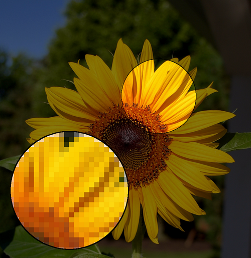
Стандартні засоби Python мають дуже обмежені можливості для роботи з растровими зображеннями. Тому для відкривання, редагування та збереження файлів поширених графічних форматів використовують бібліотеку Pillow — сучасний і активно підтримуваний форк старішої бібліотеки Python Imaging Library (PIL). Саме тому, попри назву пакета Pillow, у коді ми імпортуємо модуль з історичною назвою PIL:
from PIL import Image
Pillow не входить до стандартної бібліотеки Python, тому її потрібно встановити один раз через pip:
pip install Pillow
У Linux або macOS:
pip3 install Pillow
| Формат | Особливість |
|---|---|
| BMP | без стиснення, застарілий, кожен піксель зберігається «як є» |
| JPEG / JPG | стиснення з втратою якості, чудово підходить для фотографій, не підтримує прозорість |
| PNG | стиснення без втрати якості, підтримує прозорість (альфа-канал), сучасна заміна GIF |
| GIF | обмежена палітра (до 256 кольорів), підтримує анімацію (послідовність кадрів) |
| TIFF | велике й високоякісне, часто використовується для інженерних креслень |
Найпростіший спосіб перевірити, що Pillow встановлено правильно, — спробувати відкрити файл функцією Image.open().
from PIL import Image
shliakh_do_faylu = "photo.png"
zobr_1 = Image.open(shliakh_do_faylu)
shyryna = zobr_1.size[0]
vysota = zobr_1.size[1]
rezhym = zobr_1.mode
format_faylu = zobr_1.format
print("Розмір:", shyryna, vysota)
print("Режим:", rezhym)
print("Формат:", format_faylu)
zobr_1.show()
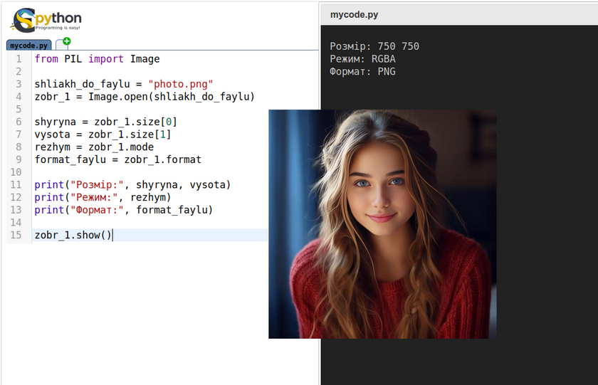
Як це працює:
Image.open() не зчитує одразу всі пікселі файлу — вона лише читає заголовок, щоб визначити формат і базові властивості. Решта даних зображення обробляється лише тоді, коли ви дасте відповідну команду (show(), resize(), rotate() тощо). Це економить і час, і пам'ять.zobr_1.size — кортеж (ширина, висота) у пікселях; zobr_1.size[0] — ширина, zobr_1.size[1] — висота. Ті самі значення доступні і як окремі властивості zobr_1.width та zobr_1.height.zobr_1.mode — колірний режим: найчастіше зустрічаються "RGB" (звичайне кольорове зображення), "RGBA" (кольорове + альфа-канал прозорості) і "L" (відтінки сірого, від англ. luminance).zobr_1.format — формат, з якого зчитано файл ("JPEG", "PNG", "GIF" тощо).zobr_1.show() відкриває зображення в стандартному переглядачі зображень операційної системи — зручно для швидкої перевірки результату під час розробки..show() показує зображення у новій вкладці браузера.
Напишіть скрипт, який відкриває будь-яке ваше фото і виводить у консоль рядок на кшталт "Це PNG-зображення розміром 1920x1080 у режимі RGB", підставляючи реальні значення атрибутів.
Дуже часто потрібно працювати із зображенням у «неправильному» форматі — наприклад, більшість зображень з інтернету є JPEG, а нам для збереження прозорості потрібен PNG.
from PIL import Image
zobr_1 = Image.open("lev_1.jpg")
zobr_1.save("lev_2.png", "PNG")
Як це працює: ми відкриваємо зображення у форматі JPEG і вказуємо save() записати його на диск у форматі PNG — другий аргумент явно задає формат, а вся складна конвертація відбувається «під капотом» бібліотеки.
Не всі формати сумісні з усіма режимами. Формат JPEG не вміє зберігати прозорість. Якщо ви спробуєте зберегти зображення в режимі "RGBA" (з альфа-каналом) чи "P" (палітра, як у GIF) одразу у .jpg, Pillow або підніме помилку, або збереже картинку з неправильними кольорами. Перед збереженням у JPEG завжди конвертуйте зображення в режим "RGB":
zobr_bez_prozorosti = zobr_1.convert("RGB")
zobr_bez_prozorosti.save("pics/rezultaty/rezultat.jpg", "JPEG")
.save() зберігає зображення у теці завантажень браузера - Завантаження(Downloads)
Image.new() та ImageDrawPillow вміє не лише редагувати готові файли, а й створювати зображення «з нуля» — наприклад, порожнє чорне полотно для подальшого малювання.
from PIL import Image
# Аргументи: режим, розмір (ширина, висота), колір фону
zobr_1 = Image.new("RGB", (200, 200), "black")
zobr_1.save("black_square.png")
Колір фону можна задати назвою ("black", "cornflowerblue" — так само, як у SimpleGraphics або tkinter) або кортежем (r, g, b).
Щоб намалювати щось на такому полотні — прямокутник, коло, лінію чи текст, — потрібен допоміжний об'єкт ImageDraw, який «прикріплюється» до конкретного зображення:
from PIL import Image, ImageDraw
zobr_1 = Image.new("RGB", (300, 200), "white")
maliar = ImageDraw.Draw(zobr_1)
maliar.rectangle([20, 20, 120, 100], fill="cornflowerblue", outline="black")
maliar.ellipse([150, 20, 250, 100], fill="tomato")
maliar.line([20, 150, 280, 150], fill="mediumseagreen", width=4)
maliar.text((20, 160), "Намальовано в Pillow!", fill="black")
zobr_1.save("simple_drawing.png")
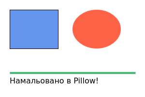
Як це працює:
ImageDraw.Draw(zobr_1) створює «пензлик», прив'язаний саме до zobr_1 — усе, що ми малюємо через maliar, одразу з'являється на цьому зображенні (порівняйте з тим, як команди SimpleGraphics малювали прямо у вікні).rectangle, ellipse, polygon тощо) приймають список координат обмежувального прямокутника [x1, y1, x2, y2] — верхній лівий і нижній правий кути, а також іменовані параметри fill (заливка) та outline (контур).line([x1, y1, x2, y2], fill=..., width=...) малює відрізок, а text((x, y), рядок, fill=...) — напис звичайним вбудованим шрифтом. Для власного шрифту й розміру символів можна створити об'єкт ImageFont.truetype("шлях_до_шрифту.ttf", розмір) і передати його параметром font= у text().Створіть однокольорове зображення 400×300 і намалюйте на ньому «смайлик»: два кола-ока, одне більше коло-обличчя та лінію-посмішку.
resize()Функція resize((нова_ширина, нова_висота), фільтр) повертає нове зображення заданого розміру — оригінал вона не змінює.
from PIL import Image
zobr_1 = Image.open("photo.png")
shyryna, vysota = 300, 300
zobr_2 = zobr_1.resize((shyryna, vysota), Image.NEAREST)
zobr_2.save("resized_photo.png")
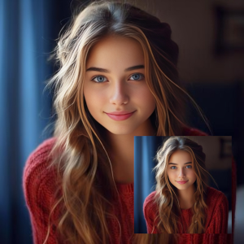
Оскільки нове зображення зазвичай може мати інакше співвідношення пікселів, ніж оригінал, Pillow повинна або додати нові пікселі (якщо зображення збільшується), або прибрати зайві (якщо зменшується). Алгоритм, який вирішує, як саме це зробити, називається фільтром ресемплінгу: найпростіший — Image.NEAREST (швидкий, але «сходинками» на діагональних лініях), більш якісні — Image.BILINEAR, Image.BICUBIC і Image.LANCZOS (повільніші, але плавніші).
Якщо не вказати фільтр явно, Pillow використає стандартний якісний фільтр (згладжування). Це чудово для фотографій, але зіпсує чіткість пікселізованих спрайтів чи ікон із різкими краями — вони стануть трохи розмитими. Для чіткого, «незгладженого» масштабування пікель-артів завжди вказуйте Image.NEAREST явно.
Якщо потрібно зберегти правильні пропорції (щоб зображення не спотворилося), спочатку зчитайте оригінальний розмір і порахуйте нову ширину та висоту з однаковим коефіцієнтом:
from PIL import Image
zobr_1 = Image.open("photo.png")
shyryna, vysota = zobr_1.size
koefitsiient = 0.2 # зменшуємо в 5 разів
nova_shyryna = int(shyryna * koefitsiient)
nova_vysota = int(vysota * koefitsiient)
zobr_2 = zobr_1.resize((nova_shyryna, nova_vysota), Image.NEAREST)
zobr_2.save("resized_photo1.png")
Ще простіший спосіб отримати «мініатюру» зі збереженням пропорцій — метод thumbnail(). На відміну від resize(), він змінює зображення на місці (нічого не повертає) і сам підбирає розмір так, щоб зображення вписалося в задану рамку, не спотворившись:
from PIL import Image
zobr_1 = Image.open("photo.png")
zobr_1.thumbnail((150, 150)) # впишеться в 150x150, пропорції збережуться автоматично
zobr_1.save("thumb_photo.png")
crop() та paste()crop([x1, y1, x2, y2]) вирізає прямокутну ділянку зображення (той самий формат координат, що й у ImageDraw), а paste(інше_зображення, (x, y)) вставляє одне зображення в інше, розташовуючи його лівий верхній кут у точці (x, y):
from PIL import Image
zobr_1 = Image.open("photo.png")
# Вирізаємо частину зображення
zobr_2 = zobr_1.crop([100, 50, 400, 400])
zobr_2.save("crop_photo.png")
# Вставляємо мініатюру в правий нижній кут того самого фото
zobr_2.thumbnail((150, 150))
zobr_1.paste(zobr_2, (zobr_1.width - 160, zobr_1.height - 160))
zobr_1.show()
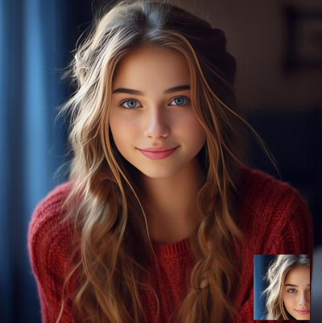
paste() змінює зображення, до якого його викликано, на місці (як і thumbnail()) — нічого не повертає.
Візьміть будь-яке фото, виріжте (crop()) із нього квадратний фрагмент по центру, а потім зробіть із нього мініатюру 64×64 за допомогою thumbnail().
rotate()from PIL import Image
zobr_1 = Image.open("photo.png")
zobr_2 = zobr_1.rotate(-90)
zobr_2.show()
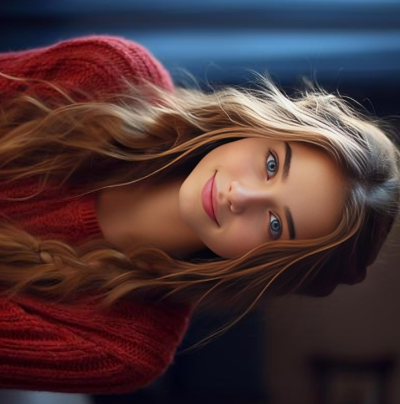
rotate(кут) обертає зображення проти годинникової стрілки на задану кількість градусів (від'ємне значення — за годинниковою). На відміну від фігур у SimpleGraphics, тут можна вказати будь-який кут, включно з дробовим (наприклад, rotate(1.5)).
Якщо кут не кратний 90°, кути прямокутного зображення після повороту «випадають» за межі початкового розміру полотна — за замовчуванням Pillow просто обрізає їх, а порожні кути заповнює прозорим або чорним кольором. Щоб зображення не обрізалося, а полотно автоматично розширилося під новий розмір, додайте expand=True:
zobr_2 = zobr_1.rotate(15, expand=True)
transpose(): віддзеркалення та повороти на 90°Для швидких, «безвтратних» перетворень (кратних 90°, а також дзеркального відображення) зручніше використовувати transpose():
from PIL import Image
zobr_1 = Image.open("photo.png")
vydz_horyzont = zobr_1.transpose(Image.FLIP_LEFT_RIGHT) # дзеркало по горизонталі
vydz_vertyk = zobr_1.transpose(Image.FLIP_TOP_BOTTOM) # дзеркало по вертикалі
vydz_90 = zobr_1.transpose(Image.ROTATE_90)
vydz_180 = zobr_1.transpose(Image.ROTATE_180)
vydz_270 = zobr_1.transpose(Image.ROTATE_270)
vydz_horyzont.save("horyzont_photo.png")
vydz_vertyk.save("vertykal_photo.png")
На відміну від rotate(90), transpose(Image.ROTATE_90) ніколи нічого не обрізає і не згладжує пікселі — це проста перестановка вже наявних рядків/стовпців пікселів, тому вона майже миттєва.
split() / merge()Кольорове зображення в режимі "RGB" насправді складається з трьох накладених одна на одну чорно-білих «карт» — по одній на червоний, зелений і синій канали. split() розкладає зображення на ці карти, а Image.merge() збирає їх назад:
from PIL import Image
zobr_1 = Image.open("photo.png")
dzherelo = zobr_1.split()
R, G, B = 0, 1, 2
vykhid_chervonyi = dzherelo[R].point(lambda i: i * 2.0) # підсилюємо червоний удвічі
vykhid_zelenyi = dzherelo[G].point(lambda i: i * 0.8) # послаблюємо зелений на 20%
vykhid_synii = dzherelo[B].point(lambda i: i * 0.0) # прибираємо синій повністю
nove_dzherelo = [vykhid_chervonyi, vykhid_zelenyi, vykhid_synii]
zobr_2 = Image.merge(zobr_1.mode, nove_dzherelo)
zobr_2.show()
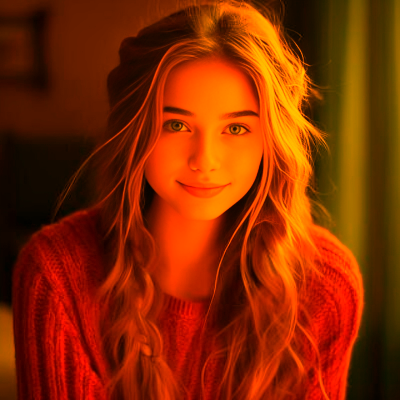
Методpoint(функція) застосовує передану функцію до кожного пікселя окремого каналу — тут ми просто множимо яскравість кожного пікселя на потрібний коефіцієнт (від 0.0 — прибрати канал повністю, до значень більших за 1.0 — підсилити його).
convert()convert(режим) переводить зображення в інший колірний режим. Найкорисніший приклад — переведення в градації сірого:
from PIL import Image
zobr_1 = Image.open("photo.png")
zobr_chb = zobr_1.convert("L") # "L" = відтінки сірого (Luminance)
zobr_chb.s95e21.png)
«Негатив» (інвертовані кольори) отримують тим самим прийомом `point()`, що й окремі канали вище, — обертаючи яскравість кожного пікселя:
```python
from PIL import Image
zobr_1 = Image.open("photo.png")
zobr_negatyv = zobr_1.point(lambda i: 255 - i)
zobr_negatyv.show()
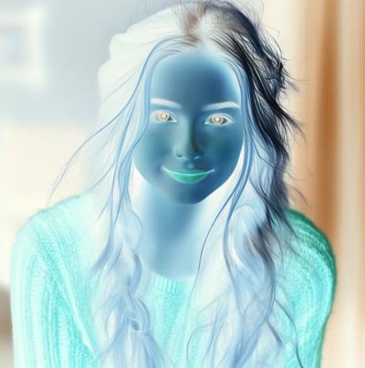
blend() та composite()Image.blend(зобр_1, зобр_2, proportsiia) змішує два зображення однакового розміру й режиму так, ніби проєктор показує їх одночасно на одному екрані — параметр proportsiia (від 0.0 до 1.0) визначає, скільки «світла» дає друге зображення (0.0 — суцільно перше, 1.0 — суцільно друге, 0.5 — порівну):
from PIL import Image
zobr_1 = Image.open("photo.png")
zobr_2 = Image.open("duck.png")
zobr_3 = Image.blend(zobr_1, zobr_2, 0.5)
zobr_3.show()
Якщо ж потрібно змішати два зображення не рівномірно по всій площі, а по-різному в різних місцях (наприклад, зробити плавний перехід лише в одній частині картинки), використовують Image.composite(зобр_1, зобр_2, maska). Маска — це чорно-біле зображення того самого розміру: білі ділянки маски показують зобр_1, чорні — зобр_2, а відтінки сірого змішують їх пропорційно яскравості:
from PIL import Image
zobr_1 = Image.open("photo.png")
zobr_2 = Image.open("duck.png")
maska = Image.open("maska.png").convert("L") # маска - завжди "L"
zobr_4 = Image.composite(zobr_1, zobr_2, maska)
zobr_4.show()
ImageFilterДля типових ефектів обробки фотографій не потрібно нічого рахувати вручну — модуль ImageFilter вже містить готові фільтри:
from PIL import Image, ImageFilter
zobr_1 = Image.open("photo.png")
zobr_1.filter(ImageFilter.BLUR).save("photo_BLUR.png")
zobr_1.filter(ImageFilter.SHARPEN).save("photo_SHARPEN.png")
zobr_1.filter(ImageFilter.CONTOUR).save("photo_CONTOUR.png")
zobr_1.filter(ImageFilter.EMBOSS).save("photo_EMBOSS.png")
zobr_1.filter(ImageFilter.FIND_EDGES).save("photo_FIND_EDGES.png")
Інші корисні фільтри з того самого модуля: DETAIL, EDGE_ENHANCE, EDGE_ENHANCE_MORE, SMOOTH, SMOOTH_MORE.
Іноді готових методів недостатньо, і потрібно прочитати або змінити колір конкретного пікселя вручну. Для цього служать getpixel() і putpixel():
from PIL import Image
zobr_1 = Image.open("photo.png")
# Читаємо колір пікселя в точці (10, 10)
kolir = zobr_1.getpixel((10, 10))
print("Колір пікселя (10, 10):", kolir) # наприклад, (120, 85, 40)
# Перефарбовуємо весь верхній лівий квадрат 50x50 у червоний колір
for x in range(50):
for y in range(50):
zobr_1.putpixel((x, y), (255, 0, 0))
zobr_1.show()
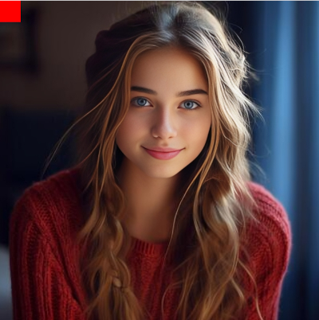
getpixel()/putpixel() викликані по одному разу на кожен піксель зручні для розуміння, але порівняно повільні на великих зображеннях чи в подвійних циклах. Якщо потрібно обробити багато пікселів одразу, швидше буде спершу викликати zobr_1.load() — цей метод повертає спеціальний об'єкт прямого доступу до пікселів, індексований так само, як pixels[x, y], але значно швидший за повторні виклики getpixel()/putpixel().
Напишіть скрипт, який проходить по всіх пікселях невеликого зображення і замінює кожен піксель, чия яскравість (середнє значення R, G, B) менша за 128, на чорний, а решту — на білий. Такий ефект називають порогова (бінарна) обробка зображення.
1. Спроба зберегти зображення з прозорістю у форматі JPEG.
zobr_1 = Image.open("logotyp.png") # режим RGBA
zobr_1.save("logotyp.jpg", "JPEG") # Помилка або зіпсовані кольори!
Як виправити: конвертуйте зображення в "RGB" перед збереженням у JPEG: zobr_1.convert("RGB").save(...) (див. 20.3).
2. Забули вказати фільтр ресемплінгу при зменшенні пікселізованого зображення.
sprait = Image.open("sprait_16x16.png")
sprait_velykyi = sprait.resize((256, 256)) # За замовчуванням - згладжування!
Як виправити: для чіткого, «незгладженого» масштабування вкажіть Image.NEAREST другим аргументом: sprait.resize((256, 256), Image.NEAREST) (див. 20.5.1).
3. Забули expand=True при обертанні на кут, не кратний 90°.
zobr_2 = zobr_1.rotate(30) # Кути зображення обрізані!
Як виправити: додайте expand=True, якщо потрібно, щоб полотно розширилося й нічого не обрізалося: zobr_1.rotate(30, expand=True) (див. 20.6.1).
4. Спроба змішати (blend()) або накласти через маску (composite()) зображення різного розміру чи режиму.
zobr_1 = Image.open("a.png") # RGBA, 200x200
zobr_2 = Image.open("b.jpg") # RGB, 300x300
zobr_3 = Image.blend(zobr_1, zobr_2, 0.5) # ValueError!
Як виправити: перед blend()/composite() обидва зображення (і маска) мають мати однаковий розмір і однаковий режим. Приведіть режим через convert(), а розмір — через resize() (див. 20.7.3).
5. Плутанина порядку аргументів: (ширина, висота), а не (x, y) при створенні зображення.
Image.new("RGB", (висота, ширина), "white") # Розміри переплутано місцями!
Як виправити: і в Image.new(), і в resize(), і в .size перший елемент кортежу завжди ширина, другий — висота (див. 20.2 та 20.4).
6. Забули, що paste() і thumbnail() змінюють зображення «на місці», а resize(), rotate(), crop(), transpose(), filter() — повертають нове.
zobr_1.resize((100, 100), Image.NEAREST) # Результат ніде не збережено!
zobr_1.save("rezultat.png") # Збереже ОРИГІНАЛЬНИЙ розмір!
Як виправити: присвоюйте результат перетворення новій змінній (zobr_2 = zobr_1.resize(...)) і зберігайте саме її — на відміну від paste() та thumbnail(), які самі змінюють об'єкт, до якого викликані.
| Назва | Тип | Для чого використовується | Приклад коду |
|---|---|---|---|
Image.open() |
Функція | Відкриває файл зображення з диска. | img = Image.open("photo.jpg") |
Image.new() |
Функція | Створює нове (порожнє) зображення із заданим колірним режимом та розміром. | canvas = Image.new("RGB", (800, 600), "white") |
save() |
Метод | Зберігає зображення на диск у вказаному форматі. | img.save("result.png") |
show() |
Метод | Тимчасово відкриває зображення у системній програмі перегляду (для тестів). | img.show() |
resize() |
Метод | Змінює розмір зображення (приймає кортеж (ширина, висота)). |
small_img = img.resize((300, 200)) |
thumbnail() |
Метод | Пропорційно зменшує зображення під задані рамки на місці (змінює оригінал). | img.thumbnail((120, 120)) |
crop() |
Метод | Обрізає зображення за заданими координатами (left, upper, right, lower). |
cropped = img.crop((50, 50, 200, 200)) |
rotate() |
Метод | Повертає зображення на заданий градус проти годинникової стрілки. | rotated = img.rotate(90) |
transpose() |
Метод | Дзеркально відображає або повертає зображення на фіксований кут. | flipped = img.transpose(Image.FLIP_LEFT_RIGHT) |
convert() |
Метод | Змінює колірний режим зображення (наприклад, з кольорового в чорно-біле. | bw_img = img.convert("L") (чорно-біле) |
paste() |
Метод | Вставляє одне зображення поверх іншого (змінює оригінал). Можна передати маску для прозорості. | background.paste(logo, (10, 10)) |
filter() |
Метод | Застосовує ефекти та фільтри (розмиття, чіткість тощо) з модуля ImageFilter. |
blurred = img.filter(ImageFilter.BLUR) |
💡 Окрім методів, у об'єкта зображення часто використовують три головні атрибути (вони викликаються без дужок):
img.size— повертає кортеж з шириною та висотою(ширина, висота).img.format— показує оригінальний формат файлу (наприклад,'JPEG').img.mode— показує колірний режим (наприклад,'RGB','RGBA','L').
Напишіть скрипт, який перебирає список імен файлів .jpg у папці pics_jpg і зберігає копію кожного у форматі .png у папці pics_png з тим самим іменем (але іншим розширенням).
Маючи п'ять фотографій різного розміру, створіть для кожної мініатюру не більшу за 120×120 пікселів (thumbnail()), а потім за допомогою Image.new() та paste() розташуйте всі п'ять мініатюр в один рядок на спільному полотні — вийде проста «стрічка попереднього перегляду».
Створіть текстовий напис (наприклад, назву вашого проєкту) на прозорому зображенні в режимі "RGBA" за допомогою ImageDraw, а потім накладіть цей напис у нижній правий кут довільної фотографії функцією paste() з параметром маски (paste(napys, (x, y), napys) — саме зображення, використане як третій аргумент, використовується як власна маска прозорості).
Візьміть кольорову фотографію та збережіть три її варіанти: оригінал, чорно-білу версію (convert("L")) і «негатив» (point(lambda i: 255 - i)).
Створіть ефект «пікель-арту» з фотографії: спочатку зменшіть зображення до, наприклад, 32×32 пікселів фільтром Image.NEAREST, а потім збільшіть його назад до оригінального розміру тим самим фільтром Image.NEAREST. Порівняйте результат зі збільшенням фільтром Image.BICUBIC — у чому різниця?
Умова завдання
Створити програму мовою Python, яка демонструє анімацію обертання крил вітряка з використанням бібліотек PIL та SimpleGraphics.
Для виконання роботи використати два графічні файли:
wmill_1.png — будівля вітряка;wmill_2.png — крила вітряка.За допомогою бібліотеки PIL сформувати 18 кадрів анімації, послідовно повертаючи зображення крил на кути від 0° до 85° з кроком 5°. Створені кадри зберігати в оперативній пам'яті (без запису у графічні файли), перетворивши їх у формат ImageTk.PhotoImage.
За допомогою засобів SimpleGraphics відобразити будівлю вітряка та реалізувати анімацію, послідовно змінюючи зображення крил із використанням функції itemConfig(). Частоту оновлення анімації налаштувати за допомогою animationTime(), забезпечивши плавне відтворення обертання.
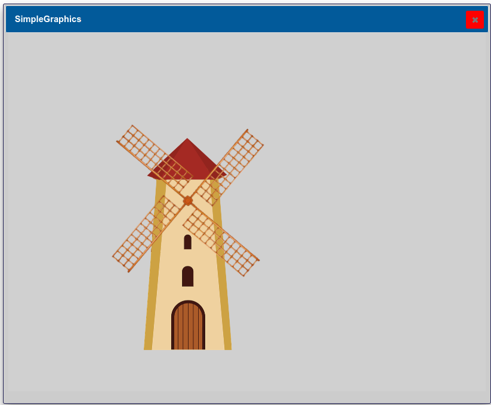
from SimpleGraphics import *
from PIL import Image, ImageTk
# Будівля вітряка
windmill = loadImage("wmill_1.png")
# Крила
original = Image.open("wmill_2.png")
# Створюємо кадри в пам'яті
frames = []
for angle in range(0, 90, 5):
img = original.rotate(angle)
frames.append(ImageTk.PhotoImage(img))
# Малюємо будівлю
drawImage(windmill, 135, 130)
# Малюємо перший кадр крил
index = 0
wings = drawImage(frames[index], 140, 120)
counter = 0
animationTime(5)
def kadr():
global index, counter, wings
counter += 1
if counter % 10 == 0:
index = (index + 1) % len(frames)
#delete(wings)
#wings = drawImage(frames[index], 140, 120)
itemConfig(wings, image=frames[index])
doAnimate(kadr)
Пояснення роботи програми
1. Завантаження зображень
windmill = loadImage("wmill_1.png")
original = Image.open("wmill_2.png")
Спочатку завантажуються два зображення:
wmill_1.png — будівля вітряка, яка не змінюється під час анімації;wmill_2.png — початкове зображення крил, яке буде повертатися.
Для будівлі використовується функція loadImage() бібліотеки SimpleGraphics, а для крил — Image.open() з бібліотеки PIL, оскільки саме вона дозволяє повертати зображення на заданий кут.2. Створення кадрів анімації
frames = []
for angle in range(0, 90, 5):
img = original.rotate(angle)
frames.append(ImageTk.PhotoImage(img))
Анімація складається з окремих кадрів.
У циклі крила повертаються на кути від 0° до 85° з кроком 5°. Для кожного кута створюється нове зображення.
Після повороту об'єкт PIL.Image перетворюється на ImageTk.PhotoImage, оскільки саме такий формат може відображатися засобами tkinter, на яких побудована бібліотека SimpleGraphics.
Усі готові кадри зберігаються у списку frames.
3. Малювання нерухомих об'єктів
drawImage(windmill, 135, 130)
Будівля вітряка малюється лише один раз, оскільки вона не бере участі в анімації.
4. Показ першого кадру
index = 0
wings = drawImage(frames[index], 140, 120)
На полотно виводиться перший кадр анімації (крила без повороту).
Змінна wings містить ідентифікатор створеного графічного об'єкта, що дозволяє надалі змінювати його зображення.
5. Налаштування швидкості анімації
animationTime(5)
Функція задає інтервал між викликами функції анімації — 5 мс. Чим менше це значення, тим частіше оновлюється зображення і тим плавніше виглядає рух.
6. Функція анімації
def kadr():
global index, counter, wings
counter += 1
if counter % 10 == 0:
index = (index + 1) % len(frames)
itemConfig(wings, image=frames[index])
Функція kadr() автоматично викликається бібліотекою SimpleGraphics.
Під час кожного виклику:
counter;itemConfig() замінює зображення крил на наступне.
Таким чином створюється ілюзія безперервного обертання.7. Запуск анімації
doAnimate(kadr)
Функція doAnimate() запускає цикл анімації та починає регулярно викликати функцію kadr()
Чому обрано саме такий алгоритм
Для створення анімації використано покадровий (спрайтовий) алгоритм. Його ідея полягає в тому, що всі необхідні зображення створюються лише один раз на початку роботи програми. Під час анімації комп'ютеру не потрібно щоразу обчислювати поворот зображення — достатньо лише показувати наступний уже готовий кадр.
Такий підхід має кілька переваг:
Крім того, для зміни кадру використано функцію itemConfig(), яка лише замінює зображення вже існуючого графічного об'єкта. Це ефективніше, ніж видаляти старий об'єкт (delete()) і створювати новий (drawImage()), оскільки кількість операцій над полотном значно менша, а анімація виглядає більш плавною.
У результаті отримано простий, швидкий та ефективний алгоритм анімації, який широко використовується в комп'ютерній графіці та під час створення двовимірних ігор.